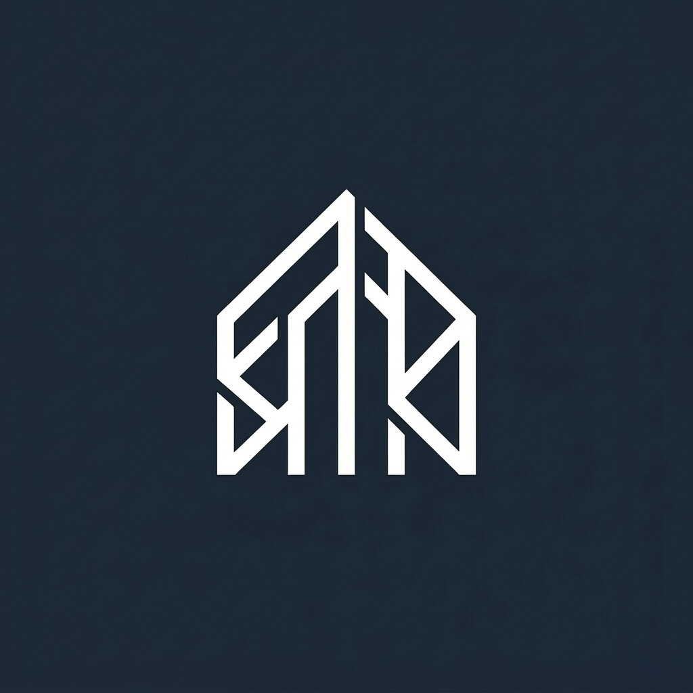

実践者として、伴走する。
松下 典功（Norikatsu Matsushita） / RECODE運営者
仕事と競技を両立し、マスターズ水泳日本一、世界大会5位入賞を果たした実践から、RECODEは生まれました。大人世代の限られた時間と環境の中で、どうすれば迷いなく積み上げられるか。実践者の視点から、あなたの現在地を共に整理します。

RECODE
現在地を整理し、
限られた時間の中で、今やるべき練習と積み上げ方を整える。
RECODEは、
マスターズスイマーのための
練習設計サポートです。
仕事と競技を両立し、マスターズ水泳日本一、世界大会5位入賞を果たした実践から、RECODEは生まれました。大人世代の限られた時間と環境の中で、どうすれば迷いなく積み上げられるか。実践者の視点から、あなたの現在地を共に整理します。
目標と現在地を線で結び、ログを活かして週ごとに調整しながら積み上げます。
出場大会、目指す記録、達成したい姿などの「ゴール」を明確にします。
練習できる環境、週の回数、現在の課題や痛みの有無などの「現在地」を整理します。
目標と現在地を結び、限られた時間の中で最優先で取り組むべきカスタムメニューを構築します。
設計図に沿ってご自身で練習を重ねます。チームやスクールに通っている場合も補完として機能します。
日々のログ内容から毎週の振り返りを行い、翌週のメニューへフィードバックして微調整します。
目標はあるが、今の練習が合っているか不安
情報が多くて、何を優先すべきか分からない
チームやスクールだけでは、自分用の調整が足りない
混雑したプールでも、できる練習を組み立てたい
RECODEは、細かなフォーム修正そのものを主目的にしたサービスではありません。
目標に向けて、今の自分はどこにいて、何を優先して積み上げるべきか。
そこを一緒に整理しながら、練習の進め方を設計していくサポートです。
練習メニュー、日々のログ、週ごとの振り返りを通して、限られた時間と環境の中でも、目標につながる練習を続けられる状態をつくります。
RECODEでは、この流れを「パフォーマンス設計」として大切にしています。
目標に向けた最適な練習プランを一緒に整理しましょう。
ご相談から設計の開始まで、すべてオンライン（LINE）で完結します。
目標に向けて、水泳を積み上げたい方のためのサービスです。
はじめから申し込みを前提にする必要はありません。
まずは、今の目標と練習の迷いを整理するところから始めます。
相談 → 整理 → 提案 → 積み上げ。
この流れで進みます。
目標や大会、今の練習状況を送る
練習環境、回数、課題を一緒に確認する
必要に応じて、合うサポート内容を案内する
メニューとログで、練習を積み上げる
まずは整理だけでも大丈夫です。必要な場合のみ、合う進め方をご案内します。
RECODEを運営する松下典功は、マスターズ水泳で日本一、世界大会5位入賞を経験し、現在も記録更新に挑戦しているマスターズスイマーです。
仕事と競技を両立しながら、自身の練習・食事・睡眠・ログ分析も研究対象として、目標から逆算した練習設計を実践し続けています。
机上の理論ではなく、限られた時間と環境の中でどう積み上げるかを、実践者の視点から一緒に整理します。

目標や練習の迷いがある方は、
公式LINEよりご相談ください。
今の現在地と、次に整えるべきことを一緒に整理します。
※まずは整理だけでも大丈夫です。